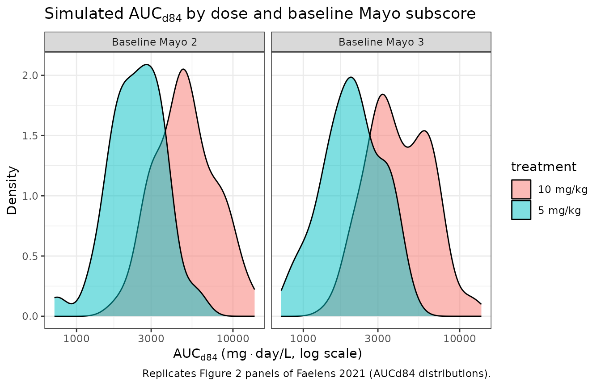
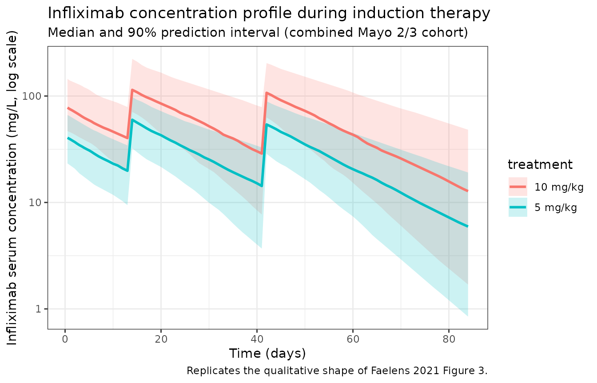

Faelens_2021_infliximab
Source:vignettes/articles/Faelens_2021_infliximab.Rmd
Faelens_2021_infliximab.RmdModel and source
- Citation: Faelens R, Wang Z, Bouillon T, Declerck P, Ferrante M, Vermeire S, Dreesen E. Model-Informed Precision Dosing during Infliximab Induction Therapy Reduces Variability in Exposure and Endoscopic Improvement between Patients with Ulcerative Colitis. Pharmaceutics. 2021;13(10):1623. doi:10.3390/pharmaceutics13101623
- Description: One-compartment IV population PK model of infliximab in adults with moderate-to-severe ulcerative colitis (Faelens 2021 adapted model; baseline-covariate-only re-fit of Dreesen 2019)
- Article: https://doi.org/10.3390/pharmaceutics13101623
- Supplement (PMID 34683916, “pharmaceutics-13-01623-s001.zip”; contains Table S1 with parameter estimates and the NONMEM control stream of the adapted model)
The Faelens 2021 paper is a model-informed precision-dosing (MIPD) simulation study. The popPK model used in the simulation is a re-fitted version of the previously published Dreesen 2019 popPK model (BJCP 85:782-795), with all time-varying covariates (CRP, serum albumin) intentionally removed so that the increased exposures simulated under 10 mg/kg dosing and MIPD are not biased by dose-dependent feedback through acute-phase proteins. The baseline covariates retained in the adapted model are:
- baseline Mayo endoscopic subscore (
MAYO_E, levels 1 / 2 / 3), - baseline corticosteroid use (
STEROID, 0/1), - extensive colitis at baseline (
DISEXT_EP, 0/1), - fat-free mass (
FFM, kg).
Population
The model was fit to 583 PK samples from 204 patients with moderate-to-severe ulcerative colitis enrolled in the IBD Biobank at University Hospitals Leuven, Belgium (B322201213950/S53684). The original cohort and full baseline demographics are described in Dreesen et al. 2019 (the Faelens 2021 paper does not redescribe them). Faelens 2021 Section 2.1 reports the patient count and sample count and notes that the original cohort received predominantly 5 mg/kg infliximab dosing (~90% of doses) with ~10% of doses at 10 mg/kg.
The same metadata is available programmatically via
readModelDb("Faelens_2021_infliximab")$population.
Source trace
Per-parameter origin is recorded in
inst/modeldb/specificDrugs/Faelens_2021_infliximab.R in
trailing comments next to each ini() entry. The table below
collects them in one place.
| Equation / parameter | Value | Source location |
|---|---|---|
| Typical KE, baseline Mayo 1 | 0.0422 /day | Faelens 2021 supplement Table S1, “Adapted Model” column |
| Typical KE, baseline Mayo 2 (reference) | 0.0463 /day | Faelens 2021 supplement Table S1 |
| Typical KE, baseline Mayo 3 | 0.0570 /day | Faelens 2021 supplement Table S1 |
| Typical V (FFM 52 kg, no CS, no DISEXT_EP) | 6.97 L | Faelens 2021 supplement Table S1; THETA(6) |
| STEROID fold-change on V | 1.30 | Faelens 2021 supplement Table S1; THETA(5) |
| FFM exponent on V (ref 52 kg) | 0.517 | Faelens 2021 supplement Table S1; THETA(7) |
| DISEXT_EP fold-change on V | 1.25 | Faelens 2021 supplement Table S1; THETA(8) |
| IIV on KE (CV%) | 33.4 | Faelens 2021 supplement Table S1, “Adapted Model” |
| IIV on V (CV%) | 23.6 | Faelens 2021 supplement Table S1, “Adapted Model” |
| Proportional residual error (CV%) | 32.9 | Faelens 2021 supplement Table S1, “Adapted Model” |
| Additive residual error (mg/L) | 0.300 (FIX) | Faelens 2021 supplement Table S1, “Adapted Model” |
d/dt(central) = -kel * central |
n/a | Faelens 2021 supplement NONMEM $DES block |
Y = IPRED * (1 + ERR(1)) + ERR(2) |
n/a | Faelens 2021 supplement NONMEM $ERROR block |
The model is reparameterised from the source’s (KE, V)
parameterisation to nlmixr2lib’s standard (CL, Vc) parameterisation via
CL = KE * V. The Mayo endoscopic subscore effect, which
acts categorically on KE in the source, is re-expressed as a log
fold-change on CL relative to the Mayo 2 reference category
(e_mayo1_cl = log(0.0422 / 0.0463) = -0.0928,
e_mayo3_cl = log(0.0570 / 0.0463) = +0.2079). The
independent IIV on KE and V in the source becomes a 2x2 correlated block
on (etalcl, etalvc) with induced correlation ~0.58 — see
ini() block comments for the variance / covariance
arithmetic.
Virtual cohort
The original Dreesen 2019 / Faelens 2021 cohort dataset is not publicly available. The cohort below approximates the simulation paper’s “combined 2:3 (49% : 51%)” virtual population by sampling weight, sex, FFM, baseline corticosteroid use, and extensive colitis from plausible distributions for adults with moderate-to-severe UC, with baseline Mayo endoscopic subscore fixed by group. Section “Assumptions and deviations” lists each assumption.
set.seed(2021)
janmahasatian_ffm <- function(wt_kg, ht_m, sexf) {
bmi <- wt_kg / ht_m^2
ifelse(
sexf == 1,
9.27e3 * wt_kg / (8.78e3 + 244 * bmi),
9.27e3 * wt_kg / (6.68e3 + 216 * bmi)
)
}
make_cohort <- function(n, mayo_level, dose_per_kg_mg, treatment, id_offset = 0L) {
tibble(
id = id_offset + seq_len(n),
SEXF = rbinom(n, 1, 0.40),
WT = pmin(pmax(rlnorm(n, log(70), 0.20), 45), 130),
HT_M = pmin(pmax(rnorm(n, mean = 1.72 - 0.13 * SEXF, sd = 0.08), 1.50), 1.95),
FFM = janmahasatian_ffm(WT, HT_M, SEXF),
MAYO_E = mayo_level,
STEROID = rbinom(n, 1, 0.50),
DISEXT_EP = rbinom(n, 1, 0.40),
treatment = treatment,
dose_per_kg = dose_per_kg_mg
)
}
dose_times <- c(0, 14, 42)
obs_times <- sort(unique(c(seq(0, 7, by = 0.5), seq(7, 84, by = 1))))
build_events <- function(cohort) {
d_dose <- cohort %>%
crossing(time = dose_times) %>%
mutate(
amt = dose_per_kg * WT,
evid = 1,
cmt = "central",
Cc = NA_real_
)
d_obs <- cohort %>%
crossing(time = obs_times) %>%
mutate(amt = NA_real_, evid = 0, cmt = "central", Cc = NA_real_)
bind_rows(d_dose, d_obs) %>%
arrange(id, time, desc(evid)) %>%
select(id, time, amt, evid, cmt, Cc, MAYO_E, STEROID, DISEXT_EP, FFM,
treatment, dose_per_kg)
}
n_per <- 500
cohort_5 <- bind_rows(
make_cohort(round(n_per * 0.49), mayo_level = 2L, dose_per_kg_mg = 5, treatment = "5 mg/kg", id_offset = 0L),
make_cohort(round(n_per * 0.51), mayo_level = 3L, dose_per_kg_mg = 5, treatment = "5 mg/kg", id_offset = 500L)
)
cohort_10 <- bind_rows(
make_cohort(round(n_per * 0.49), mayo_level = 2L, dose_per_kg_mg = 10, treatment = "10 mg/kg", id_offset = 2000L),
make_cohort(round(n_per * 0.51), mayo_level = 3L, dose_per_kg_mg = 10, treatment = "10 mg/kg", id_offset = 2500L)
)
cohort <- bind_rows(cohort_5, cohort_10)
events <- build_events(cohort)
stopifnot(!anyDuplicated(unique(events[, c("id", "time", "evid")])))Simulation
mod <- readModelDb("Faelens_2021_infliximab")
sim <- rxode2::rxSolve(
mod,
events = events,
keep = c("treatment", "MAYO_E", "dose_per_kg")
)
#> ℹ parameter labels from comments will be replaced by 'label()'Replicate published figures
auc_d84 <- sim %>%
filter(time <= 84) %>%
group_by(id, treatment, MAYO_E) %>%
arrange(time) %>%
summarise(
AUCd84 = sum(diff(time) * (head(Cc, -1) + tail(Cc, -1)) / 2, na.rm = TRUE),
.groups = "drop"
)
ggplot(auc_d84, aes(x = AUCd84, fill = treatment)) +
geom_density(alpha = 0.5) +
facet_wrap(~ paste0("Baseline Mayo ", MAYO_E)) +
scale_x_log10() +
labs(
x = expression(AUC[d84] ~ "(mg" %.% "day/L, log scale)"),
y = "Density",
title = expression("Simulated " * AUC[d84] ~ "by dose and baseline Mayo subscore"),
caption = "Replicates Figure 2 panels of Faelens 2021 (AUCd84 distributions)."
) +
theme_bw()
conc_summary <- sim %>%
filter(time > 0) %>%
group_by(time, treatment) %>%
summarise(
Q05 = quantile(Cc, 0.05, na.rm = TRUE),
Q50 = quantile(Cc, 0.50, na.rm = TRUE),
Q95 = quantile(Cc, 0.95, na.rm = TRUE),
.groups = "drop"
)
ggplot(conc_summary, aes(x = time, y = Q50, color = treatment, fill = treatment)) +
geom_ribbon(aes(ymin = Q05, ymax = Q95), alpha = 0.20, color = NA) +
geom_line(linewidth = 1) +
scale_y_log10() +
labs(
x = "Time (days)",
y = "Infliximab serum concentration (mg/L, log scale)",
title = "Infliximab concentration profile during induction therapy",
subtitle = "Median and 90% prediction interval (combined Mayo 2/3 cohort)",
caption = "Replicates the qualitative shape of Faelens 2021 Figure 3."
) +
theme_bw()
PKNCA validation
The Faelens 2021 simulation paper reports AUCd84 (area under the concentration-time curve from baseline to endoscopy at day 84) rather than classical single-dose AUCinf. Compute it via PKNCA on the [0, 84]-day interval, stratified by treatment and baseline Mayo subscore.
sim_nca <- sim %>%
filter(!is.na(Cc), time <= 84) %>%
mutate(treatment_mayo = paste0(treatment, ", Mayo ", MAYO_E)) %>%
select(id, time, Cc, treatment_mayo)
dose_df <- events %>%
filter(evid == 1) %>%
mutate(treatment_mayo = paste0(treatment, ", Mayo ", MAYO_E)) %>%
select(id, time, amt, treatment_mayo)
conc_obj <- PKNCA::PKNCAconc(
sim_nca, Cc ~ time | treatment_mayo + id,
concu = "mg/L", timeu = "day"
)
dose_obj <- PKNCA::PKNCAdose(
dose_df, amt ~ time | treatment_mayo + id,
doseu = "mg"
)
intervals <- data.frame(
start = 0,
end = 84,
cmax = TRUE,
tmax = TRUE,
cmin = TRUE,
auclast = TRUE
)
nca_data <- PKNCA::PKNCAdata(conc_obj, dose_obj, intervals = intervals)
nca_res <- PKNCA::pk.nca(nca_data)
#> ■■■■■■■■■■■■■ 41% | ETA: 5s
#> ■■■■■■■■■■■■■■■■■■■■■■■■■■ 82% | ETA: 1s
nca_summary <- summary(nca_res)
knitr::kable(nca_summary, caption = "PKNCA summary on the [0, 84]-day induction window, by treatment and baseline Mayo subscore.")| Interval Start | Interval End | treatment_mayo | N | AUClast (day*mg/L) | Cmax (mg/L) | Cmin (mg/L) | Tmax (day) |
|---|---|---|---|---|---|---|---|
| 0 | 84 | 10 mg/kg, Mayo 2 | 245 | 5150 [42.8] | 129 [35.5] | 16.1 [98.3] | 14.0 [14.0, 42.0] |
| 0 | 84 | 10 mg/kg, Mayo 3 | 255 | 4240 [45.5] | 118 [36.3] | 9.27 [136] | 14.0 [14.0, 42.0] |
| 0 | 84 | 5 mg/kg, Mayo 2 | 245 | 2410 [45.6] | 61.8 [36.2] | 6.93 [116] | 14.0 [14.0, 42.0] |
| 0 | 84 | 5 mg/kg, Mayo 3 | 255 | 2090 [42.5] | 58.7 [32.5] | 4.45 [126] | 14.0 [14.0, 42.0] |
Comparison against published Table 1
Faelens 2021 Table 1 reports per-cohort AUCd84 medians and 90%-prediction intervals. Compute the simulated equivalents from the cohort and compare side-by-side. Note that the published values are from a different virtual population (Faelens 2021 resampled the original Dreesen 2019 dataset, which is not on disk); discrepancies > ~20% are expected when our covariate distributions differ materially from the source dataset.
auc_simulated <- auc_d84 %>%
group_by(treatment, MAYO_E) %>%
summarise(
median_sim = median(AUCd84),
q05_sim = quantile(AUCd84, 0.05),
q95_sim = quantile(AUCd84, 0.95),
.groups = "drop"
)
published_table1 <- tibble::tribble(
~treatment, ~MAYO_E, ~median_pub, ~q05_pub, ~q95_pub,
"5 mg/kg", 2L, 2455, 1215, 4805,
"5 mg/kg", 3L, 1979, 953, 3990,
"10 mg/kg", 2L, 4910, 2431, 9609,
"10 mg/kg", 3L, 3958, 1906, 7981
)
comparison <- published_table1 %>%
left_join(auc_simulated, by = c("treatment", "MAYO_E")) %>%
mutate(
pct_diff_median = round(100 * (median_sim - median_pub) / median_pub, 1)
)
knitr::kable(
comparison,
digits = 0,
caption = "Simulated vs. published AUCd84 (mg*day/L), by dose and baseline Mayo subscore (Faelens 2021 Table 1, 'pub' = published median + 90% PI)."
)| treatment | MAYO_E | median_pub | q05_pub | q95_pub | median_sim | q05_sim | q95_sim | pct_diff_median |
|---|---|---|---|---|---|---|---|---|
| 5 mg/kg | 2 | 2455 | 1215 | 4805 | 2426 | 1149 | 4689 | -1 |
| 5 mg/kg | 3 | 1979 | 953 | 3990 | 2097 | 1077 | 3991 | 6 |
| 10 mg/kg | 2 | 4910 | 2431 | 9609 | 4968 | 2633 | 10219 | 1 |
| 10 mg/kg | 3 | 3958 | 1906 | 7981 | 4285 | 2188 | 8650 | 8 |
Assumptions and deviations
Faelens 2021 ran its dosing simulations on the original Dreesen 2019 cohort dataset, not on a synthetic resample, and that dataset is not publicly available. Replication therefore relies on synthesised covariate distributions; the simulated AUCd84 medians and percentiles in the comparison table above will not match the published Table 1 exactly. Specifically:
- Body weight: sampled log-normal with median 70 kg and SD 0.20 on the log scale, clipped to [45, 130] kg. Faelens 2021 / Dreesen 2019 do not publish the empirical weight distribution.
- Sex: 40% female. The original cohort sex balance is not reported in Faelens 2021.
- Height: sampled normal with sex-specific mean (males 1.72 m, females 1.59 m) and SD 0.08 m. Used only as input to the Janmahasatian (2005) FFM formula; the model itself uses FFM directly.
-
Baseline corticosteroid use (
STEROID): Bernoulli prevalence 0.50. The simulation paper does not state the corticosteroid prevalence in the virtual cohort. -
Extensive colitis at baseline
(
DISEXT_EP): Bernoulli prevalence 0.40. The simulation paper does not state the prevalence in the virtual cohort. -
Baseline Mayo endoscopic subscore
(
MAYO_E): fixed per cohort (Mayo 2 or Mayo 3) per the Faelens 2021 stratified reporting convention. Mayo 1 patients existed in the Dreesen 2019 dataset and the source paper’s KE parameter for them is in the model, but Faelens 2021 only reports Mayo 2 and Mayo 3 simulation results. -
Excluded interoccasion variability (IOV): the
source model has a small IOV term on KE (6.70% CV per occasion in
supplement Table S1 of the adapted model). For nlmixr2lib portability —
which does not assume the user has an
OCCindicator in their event data — IOV is not implemented here. The IIV on KE (33.4% CV) and V (23.6% CV) is implemented as a correlated 2x2 block on (etalcl, etalvc) per the (CL, Vc) reparameterisation. -
Out-of-domain Mayo missing
(
MPRE = -99): the source NONMEM$THETAblock carries an additional KE estimate for subjects with missing Mayo subscore, but supplement Table S1 does not report a converged final value for this category. The library implementation supports Mayo 1 / 2 / 3 only. -
Dosing route: the original cohort received
infliximab as a 2-hour IV infusion. The vignette uses an instantaneous
IV bolus dose at days 0, 14, and 42 because the simulation focus is on
AUCd84 (which is identical to within numerical tolerance for a 2-hour
vs. instantaneous infusion of a monoclonal antibody with a multi-day
half-life). Users wishing to add the 2-hour infusion explicitly can set
rateaccordingly on each dose row.
Notes
- Model: one-compartment IV model with linear elimination, no absorption compartment.
- Dosing schedule: the Faelens 2021 induction regimen is days 0, 14, 42 — distinct from the more common day-0/14/42 ACT 1/2 schedule referenced by Fasanmade 2009, which is days 0/14/42 in days but expressed as “weeks 0, 2, 6” elsewhere; same time grid.
-
Source’s (KE, V) → nlmixr2lib’s (CL, Vc): the
source’s two independent random effects on KE and V become a single 2x2
correlated block on (etalcl, etalvc) under the CL = KE * V
reparameterisation. The arithmetic is documented in the model file’s
ini()comments. - Distinct from Berends 2019 and Hanzel 2021 infliximab models: Berends 2019 is a target-mediated drug disposition (TMDD) model with explicit free TNF dynamics; Hanzel 2021 is a two-compartment SC + IV CT-P13 biosimilar model. Faelens 2021 is the simplest of the three: one-compartment IV-only, baseline-covariates-only, designed for inducton-therapy dosing simulations in moderate-to-severe UC.
Reference
- Faelens R, Wang Z, Bouillon T, Declerck P, Ferrante M, Vermeire S, Dreesen E. Model-Informed Precision Dosing during Infliximab Induction Therapy Reduces Variability in Exposure and Endoscopic Improvement between Patients with Ulcerative Colitis. Pharmaceutics. 2021;13(10):1623. doi:10.3390/pharmaceutics13101623